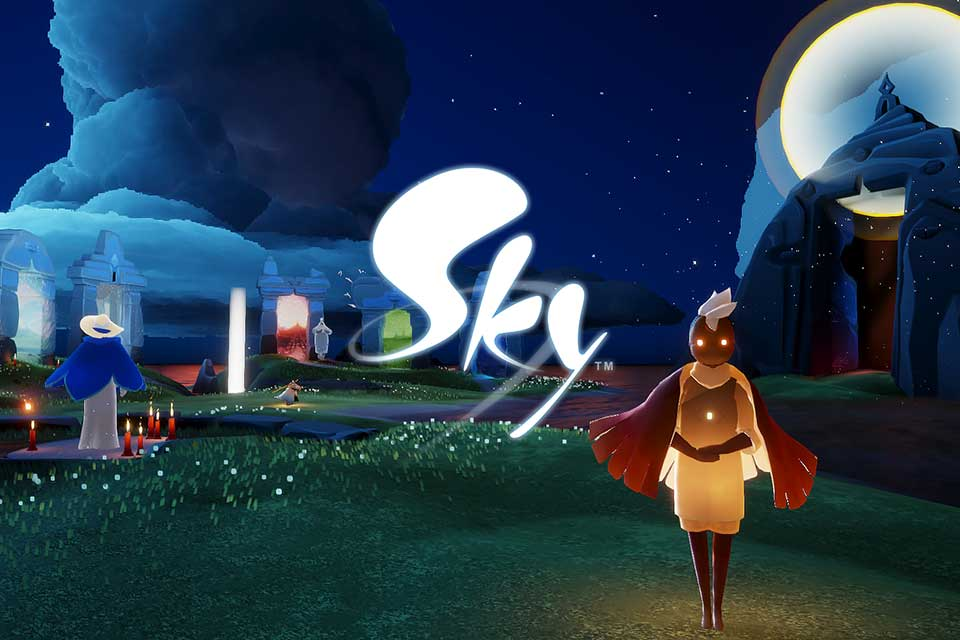

Sky: Children of Light

Memenangkan banyak penghargaan, Sky: Children of Light jadi salah satu game Android terbaik yang dirilis tahun 2020 kemarin. Game free-to-play yang dikembangkan oleh kreator Journey (pemenang GOTY 2013) ini menawarkan 7 dunia untuk dijelajahi, kustomisasi karakter yang cukup mendalam, visual menawan dan elemen sosial unik yang tidak bisa ditemukan di game lain. Untuk berinteraksi dengan pemain lain, pemain juga hanya diberi opsi chat teks alih-alih voice chat seperti game multiplayer kebanyakan.